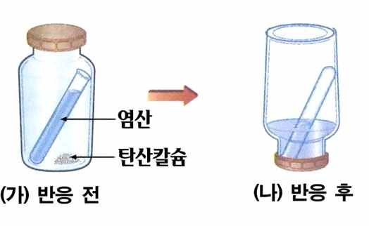

문제 2
아래 그림과 같이 2.4 몰의 질소 기체만으로 충진된 밀폐된 용기 내, 10 g의 탄산칼슘(\(\text{CaCO}_3\text{(s)}\))과 묽은 염산 수용액이 들어있다. 용기를 뒤집어 반응을 진행시켰더니 기체가 발생하였고, 이 때 모든 탄산칼슘이 반응에 의해 소모되었음을 확인하였다. 용기 내 모든 기체는 물에 대한 용해도가 없으며, 이상 기체라고 가정했을 때 아래의 물음에 답하시오.

2-가
주어진 반응의 화학반응식을 나타내시오(반드시 물질의 상태가 표시되어야 함).
2-나
탄산칼슘의 화학식량은 100이다. 반응 후 내부 압력을 \(P\)라고 했을 때, 반응을 통해 발생한 기체의 부분 압력을 \(P\)로 나타내 보시오.
2-다
발생한 기체 화합물의 루이스 구조를 나타내시오.
2-라
이산화황은 물(\(\text{H}_2\text{O}\))과 같이 굽은 구조이다. 위 반응을 통해 발생한 기체 화합물과 이산화황 중, 끓는점이 높은 화합물은 무엇인지 나타내고 그 이유를 설명하시오.
(힌트 1: 전기음성도 값: H: 2.20, C: 2.55, N: 3.04, O: 3.44, S: 2.58)
(힌트 2: 원자 번호: H: 1, C: 6, N: 7, O: 8, S: 16)